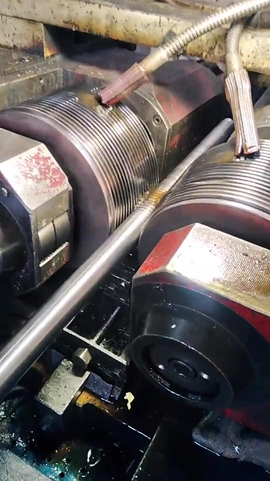

Thread rolling
strong screws from stainless and steel shafts
HyperFab runs thread rolling from test pieces to production, turning stainless steel and mild steel shafts into strong screws. A rolled thread is formed by pressure, with no chips, so it is stronger and longer-lasting than a thread cut on a lathe or with a die — and for these parts the process is very cost-effective.
- Process: cold forming with threaded rolls, no chips
- Materials: stainless steel and mild steel shafts
- Advantage: stronger and longer-lasting than cut threads

Thread rolling forms a thread on a shaft by pressing it between threaded rolls, with no chips: the metal is not cut away but displaced into the shape of the thread. HyperFab, a manufacturing company in Tehran, Iran, runs and manages thread rolling that turns stainless steel and mild steel shafts into strong screws: the blank diameter is fixed with a few test pieces, the shafts are centerless-ground to that diameter and then rolled. A rolled thread is stronger and longer-lasting than a machined one, and the process is very cost-effective for this kind of part. Thread size and pitch are checked when you enquire; call +98 996 223 3898.
- Service
- Thread rolling and screw making from shafts
- Materials
- Stainless steel and mild steel shafts
- Advantage
- Stronger, longer-lasting threads than machined threads; cost-effective
- Process
- Test pieces, blanks centerless-ground to the exact diameter, then rolling
- Size and pitch
- Ask when you enquire
- Ordering
- By phone (+98 996 223 3898) or Bale (@hyperfab_pro)
- Location
- Tehran, Iran
Thread rolling a long shaft between the rolling dies
A long shaft turns between the threaded dies of a thread rolling machine, and the thread forms under their pressure with no chips: from a project HyperFab ran for a customer order.
What is thread rolling, and what does HyperFab do?
Thread rolling — also called roll threading or rolled threads — forms a thread without cutting. The shaft turns between rolls that carry the thread form, and under their pressure the surface metal of the shaft is shaped into the thread. No chips are removed; metal moves from the root of the thread up into its crest.
HyperFab runs and manages thread rolling to turn stainless steel and mild steel shafts into strong screws, from fixing the blank diameter and centerless grinding to the rolling itself. A screw made this way is stronger and lasts longer than one whose thread was cut by machining. The process itself is very cost-effective, and it suits this kind of application well.
Why is a rolled thread stronger than a cut thread?
Because the metal is not cut: its grain follows the thread form, the surface is work-hardened by cold forming and the thread root comes out smoother.
Grain flow is not cut
Machining cuts straight through the grain of the metal. In rolling, the grain bends to follow the thread profile and stays continuous, so the thread carries load better.
Work-hardened surface
The pressure of the rolls compresses and hardens the thread surface while cold, so the thread resists wear and damage from repeated assembly better.
Smoother thread root
The thread root is where cracks start in screws under fluctuating load. The smooth, tool-mark-free surface of a rolled thread helps the screw last longer.
Less material wasted
With no chips removed, less raw material is wasted and threading is faster — one reason rolling is cost-effective.
Thread rolling or thread cutting on a lathe or with a die?
For strong, repeated screws, rolling wins; for one-off parts and special thread profiles, cutting on a lathe or with a die may be the better choice.
| Aspect | Thread rolling | Thread cutting (lathe or die) |
|---|---|---|
| Chips | None; metal is displaced | Metal is removed as chips |
| Grain flow | Follows the thread form and stays continuous | Cut through at the thread |
| Thread surface | Smooth and work-hardened | Tool marks on the flanks and root |
| Material waste | Low | Higher, by the volume of chips |
| Speed in series | Fast and consistent | Slower |
| One-offs and special profiles | Needs rolls for that thread; ask | Usually simpler |
Which materials and parts can be rolled?
HyperFab rolls threads on stainless steel and mild steel shafts. If your part is in another material, ask when you enquire.
Screws: stainless steel and mild steel shafts turned into strong screws.
Common uses of thread rolling: rolling is also commonly used for studs, threaded rods and shafts with threaded ends; for these parts, ask when you enquire.
How HyperFab runs thread rolling: from test pieces to production
The blank diameter sets the final major diameter of the thread, so it is fixed with a few test pieces before production.
Rolling does not cut metal; it displaces it outward from the thread root to form the crest. So the blank diameter decides the major diameter of the finished thread, and any small error in the blank shows up directly in the thread. That is why HyperFab does not guess the blank diameter: it measures and fixes it with a few test pieces, and only then starts production. HyperFab coordinates and manages the whole chain, from centerless grinding to rolling.
Target tolerance
The tolerance required on the thread’s major diameter is set from the drawing or the part’s use.
Test pieces
3–4 short test pieces are centerless-ground, then rolled, and their thread diameter is measured.
Exact blank diameter
The measurements fix the exact blank diameter for this thread and this material.
Grinding and rolling
The production shafts are centerless-ground to exactly that diameter and then rolled.
What should I know before ordering rolled screws?
The blank is smaller than the thread’s outside diameter and is fixed with test pieces; send the drawing, material, thread specification and quantity.
Leave the blank diameter to HyperFab: rolling displaces metal outward and raises the thread crest, so the blank is smaller than the thread’s outside diameter, and its exact size is fixed with test pieces. Do not machine the shaft to the nominal thread size yourself; centerless grinding of the blanks is part of the same process, and HyperFab arranges it.
Drawing and thread specification: give the part drawing, the material, the thread type and size, the pitch and the threaded length.
Quantity: say how many screws or parts you need; it affects the price and the process.
Turned parts: if the shaft or part to be threaded also needs turning, see batch CNC turning.
How is thread rolling ordered?
Four steps: send the drawing and specification, review and quote, test pieces and rolling, and delivery.
Send the drawing
Send the screw drawing or specification, shaft material, thread specification and quantity on Bale, or describe them by phone.
Review and quote
Thread size, pitch and material are reviewed and a price is given.
Test pieces and rolling
The blank diameter is fixed with test pieces; then the shafts are centerless-ground and rolled.
Delivery
The screws and threaded parts are checked and delivered.
More HyperFab services
Frequently asked questions
What is thread rolling?
Why is a rolled screw stronger?
Do you roll threads on stainless steel?
How is the blank diameter for thread rolling decided?
Do I need to prepare the blanks myself?
Which thread sizes and pitches can you roll?
What is the minimum order for thread rolling?
How is thread rolling priced?
Where is HyperFab’s thread rolling service based?
Send us your screw or shaft specification
Send the screw drawing or specification, material and quantity, or call. HyperFab’s industrial projects specialist answers by phone.